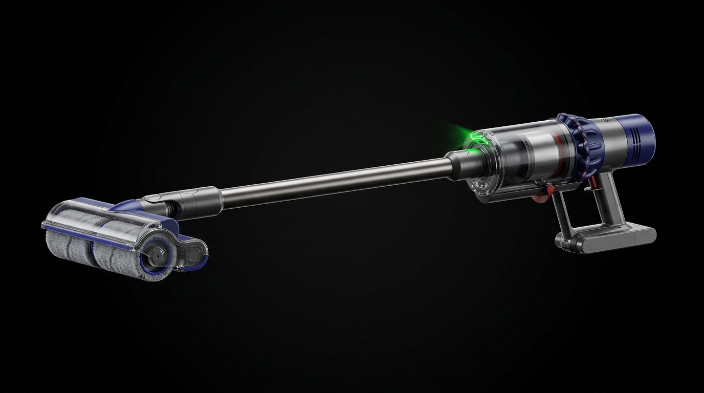

Dyson V15s Detect Submarine Teknik Servis Dünyası

⚠️ Sık Yaşanan Kronik Sorunlar
Submarine Islak Başlık Tanıma ve Sıvı Teması: V15s modelinin en hassas noktası, ıslak silme başlığı takıldığında devreye giren sıvı modudur. Yanlış kullanım veya başlığın dikkatsiz temizlenmesi sonucu motor haznesine kaçan nem, anakartta oksitlenme ve kısa devreye yol açar.
Islak Mod Akış Algılama ve Motor Kesintileri: Cihaz ıslak başlığı algılamasına rağmen su püskürtme veya emiş döngüsünü başlatmıyorsa, başlık içi veri iletim pinlerinde veya ana gövde soketlerinde elektriksel oksitlenme oluşmuştur.
Ağır Yük Altında Akıllı Pil Blokajı: Hem ıslak başlık motorunu besleyen hem de ana emiş gücünü sağlayan akıllı batarya, sıvı teması veya aşırı ısınma durumunda ekranda hata vererek kendini kalıcı olarak kilitleyebilir.
🛠️ Profesyonel Servis Çözümleri
Ultrasonik Oksit Temizliği & Kart Onarımı: Sıvı temasına maruz kalmış V15s anakartlarını ve veri yollarını özel solüsyonlarla ultrasonik temizlemeden geçiriyor, kısa devre yapan entegreleri bileşen seviyesinde değiştiriyoruz.
Gelişmiş Islak Başlık İletişim Revizyonu: Submarine başlığı ile gövde arasındaki akım ve veri iletimini sağlayan, oksitlenmiş veya aşınmış altın uçlu bağlantı pinlerini ve soket yataklarını sıfırlıyoruz.
Akıllı BMS Sıfırlama & Hücre Değişimi: Kilitlenen veya sıvı teması uyarısı veren batarya koruma devresini (BMS) özel yazılımlarla resetliyor, ömrünü tamamlayan hücreleri yüksek deşarjlı premium pillerle yeniliyoruz.
Dyson V15s Submarine Süpürgenizde Sıvı Teması Veya Güç Sorunu mu Var?
İstanbul genelinde 0-24 saatte hızlı arıza teşhisi sunuyoruz. Hemen bizimle iletişime geçin.
Arıza Bildirimi Oluştur